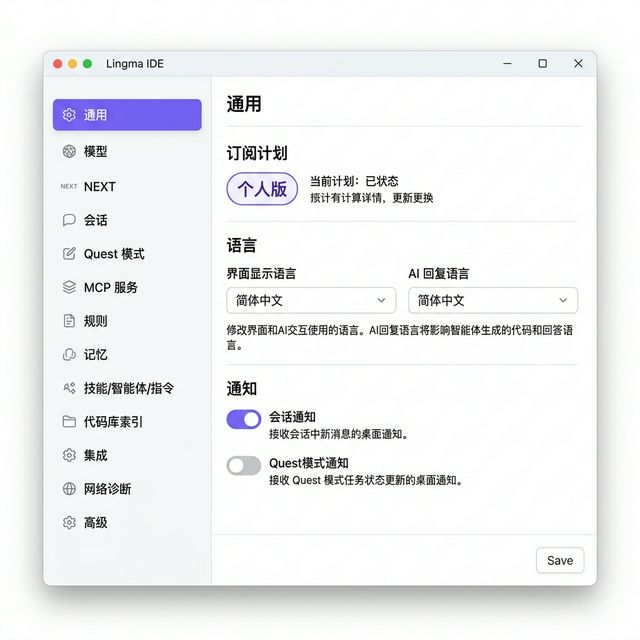

一款基于 VS Code 开源版本打造的 AI 原生集成开发环境，由阿里云通义灵码团队开发。
开箱即用的智能编码助手，无需额外安装插件。支持代码补全、智能问答、多文件修改等能力。
支持 Python、Java、JavaScript、C/C++、Go、PHP、Ruby、Rust、TypeScript 等 30 多种主流语言。
兼容 VS Code 扩展市场，可安装语言支持、调试器、主题等上千个扩展插件。
个人开发者免费使用全部核心功能，包括 AI 编码助手，只需注册阿里云账号即可。
具备自主规划和工具使用能力，可根据自然语言描述端到端完成编码任务。
代码数据安全保障，通过联邦学习机制确保代码不泄露。国产自主可控。
三步即可开始使用 Lingma IDE。
Windows 10/11（x64 / arm64）
macOS 11.0 或更高版本
打开 lingma.aliyun.com/download，根据你的操作系统选择对应版本下载安装包。
双击下载的安装包，按照向导一步步完成安装。安装过程与普通软件相同。
首次启动后，使用阿里云账号登录即可激活 AI 编码助手功能。如果没有账号，可以免费注册。
也可以不登录直接使用基本编辑功能，但登录后才能使用 AI 代码补全等高级功能。
Lingma IDE 的界面与 VS Code 非常相似，主要由以下 7 个区域组成。
位于顶部，包含 File、Edit、View、Run、Terminal、Help 等菜单，以及 Editor / Quest 模式切换。
最左侧的图标栏，点击图标可切换侧边栏内容。从上到下依次为：资源管理器、搜索、Git、远程连接、扩展、Lingma AI 等。
根据活动栏选中的图标展示对应内容。默认为资源管理器，可浏览项目文件和文件夹。
首次启动显示 Lingma 欢迎页，支持打开项目、Clone 仓库、SSH 连接。打开文件后显示代码编辑器。
包含终端（TERMINAL）、输出（OUTPUT）、问题（PROBLEMS）、调试控制台等标签页。快捷键 Ctrl+` 打开。
最底部紫色条，显示错误/警告数量、Git 分支、编程语言、编码格式等实时信息。
跟着以下步骤，从零开始创建一个 Python 项目。
菜单栏选择 文件 → 打开文件夹...，选择或新建一个文件夹作为你的项目工作区。
首次打开文件夹时会弹出信任对话框，选择 "是，我信任此作者"。
在左侧文件浏览器中点击 "新建文件..." 按钮，输入文件名 main.py，按回车确认。
在编辑器中输入以下代码：
def hello(name):
print(f"你好, {name}! 欢迎学习编程 🎉")
hello("同学")
点击左侧活动栏的 扩展图标（方块形状），或按 Ctrl+Shift+X。
在搜索栏输入 python，找到 Python Extension Pack，点击 安装。安装后即获得语法高亮、智能提示等功能。
安装扩展后，需要登录千问灵码账号才能使用 AI 代码补全功能。部分插件如果无法在 Lingma IDE 内安装，可前往 VS Code 扩展市场 下载安装。
终端让你直接在 IDE 里运行命令，无需切换窗口。
打开方式：菜单 查看 → 终端，或按 Ctrl+`
# 运行 Python 脚本
python main.py
# 安装第三方库
pip install pandas
命令面板是 Lingma IDE 的"万能搜索框"，几乎所有功能都能通过它找到。
打开方式：Ctrl+Shift+P
输入 > 后搜索命令，移除 > 则搜索文件。支持模糊匹配，如输入 "odks" 能找到 "Open Default Keyboard Shortcuts"。
活动栏是 Lingma IDE 左侧的图标列，每个图标对应一个独立的工作面板。以下逐一介绍。
显示当前打开的文件夹中所有文件和子目录，是最常用的视图。支持新建文件/文件夹、重命名、拖拽移动等操作。底部还有 OUTLINE（代码大纲）和 TIMELINE（文件修改历史）面板。
首次启动 Lingma IDE 时，侧边栏会提示 "No Folder Opened"，点击 Open Folder 按钮选择你的项目文件夹即可。
在整个项目中快速搜索文本或正则表达式。支持 替换 功能，可一键批量替换所有匹配项。快捷键 Ctrl+Shift+F。
内置 Git 版本控制。可以直观地查看文件变更（增删改）、暂存更改、编写 Commit 信息并提交、拉取/推送代码、查看分支和历史等。即使从未使用过 Git，Lingma IDE 也提供了友好的图形界面。
点击 "初始化存储库" 即可为当前文件夹创建 Git 仓库。文件名旁的 U（未跟踪）、M（已修改）标记帮你了解版本状态。
支持通过 SSH 连接到远程服务器进行开发。也可用于连接 Docker 容器或 WSL（Windows 子系统）。在欢迎页可通过 "Connect via SSH" 快速开始远程开发。
安装和管理插件。在搜索框输入关键词即可找到所需扩展。常用扩展推荐：
Python 语法高亮、智能提示、Linting、调试支持
中文语言包，将界面翻译为简体中文
在 IDE 中运行 Jupyter Notebook（.ipynb）
一键启动本地服务器预览 HTML 页面，自动刷新
增强 Git 功能：逐行追溯修改记录、可视化分支图
将错误和警告直接高亮显示在代码行内
自动格式化代码，保持风格统一
One Dark Pro、Material Theme 等个性化主题
Markdown 预览、快捷键、目录生成
Lingma IDE 独有的 AI 入口。可打开聊天面板（Ctrl+L）、行内对话（Ctrl+I）、Quest 模式（Ctrl+E）。详见下方 AI 智能编码 章节。
Lingma IDE 底部面板包含多个标签页，用于输出信息、运行命令和排查问题。按 Ctrl+` 打开/关闭。
内置命令行终端，默认使用 PowerShell（Windows）。可以直接运行 python main.py、pip install 等命令，无需切换窗口。支持多终端同时运行。
实时显示代码中的错误和警告。安装 Python 扩展后，语法错误、未定义变量等问题会自动出现在这里，点击可跳转到对应代码行。
显示扩展和工具的输出日志。例如 Python 语言服务器的启动信息、Git 操作的详细日志等。排查扩展问题时很有用。
调试程序时使用的交互式控制台。可以在断点暂停时输入表达式查看值、执行临时代码。
管理端口转发，在远程开发或运行 Web 服务器时使用。例如运行 Flask/Django 应用后，可在此查看和转发端口。
初学者最常用的是 TERMINAL 和 PROBLEMS 两个标签页。TERMINAL 用于运行代码，PROBLEMS 帮你快速定位错误。
通过设置面板可以自定义灵码 AI 助手的行为。点击左下角齿轮图标，或通过命令面板搜索 Lingma: Settings 打开。

日常使用中最常用的设置项，建议初学者优先了解。
最基本的设置页。包括：
选择 AI 使用的大模型。可切换不同的通义千问模型（如 Qwen3 系列），不同模型在速度和准确度上有差异。初学者保持默认即可。
配置 AI 对话的行为。包括会话历史管理、是否自动包含上下文代码、回复风格等。影响 AI 助手的对话体验。
定义 AI 生成代码时应遵循的规则。例如编码风格规范、命名约定、禁用某些库等。可以通过 Markdown 文件或直接输入文本定义规则。
例如可以设置规则：“所有变量名使用英文，注释使用中文，代码风格遵循 PEP 8”。
AI 助手会记住你的偏好和工作习惯，并在后续对话中自动应用。在这里可以查看、编辑或清除 AI 已经学习到的记忆内容。
适合有一定编程经验后进一步探索，初学者可暂时跳过。
启用实验性的前沿功能。这些功能可能还不稳定，但可以提前体验最新的 AI 编程能力。
自主编程模式。AI 根据你的任务描述自动规划步骤、编辑代码、运行命令，端到端完成开发任务。可配置自动执行级别。
配置项目代码的索引范围。索引后 AI 能更准确地理解项目结构，提供更相关的代码建议。
第三方服务集成设置，如代码仓库、CI/CD 工具等的连接配置。
AI 服务连接不上时用于排查网络问题。可测试与服务器的连接状态和延迟。
包括日志级别、缓存清理、调试模式等开发者选项。一般无需修改。
Lingma IDE 最强大的特色功能——让 AI 成为你的编程搭档。
当你开始输入代码时，通义灵码会基于上下文自动生成代码建议。按 Tab 键即可接受补全。
# 输入函数头，AI 自动补全函数体 👇
def add(a, b):
return a + b ← AI 建议（按 Tab 接受）
# 输入注释描述需求，AI 生成完整代码 👇
# 读取 CSV 文件并计算平均值
import pandas as pd ← AI 自动生成
df = pd.read_csv("data.csv") ← AI 自动生成
avg = df["score"].mean() ← AI 自动生成
当代码出现未定义变量、语法错误等问题时，灵码会自动检测并提供一键修复方案。
在右侧 AI 面板中，可以直接用中文提问："如何用 Python 读取 Excel 文件？"，灵码会给出代码示例。
描述修改需求后，灵码可以同时修改多个文件，并逐一展示变更供你审查确认。
描述编码任务后，智能体自主拆解步骤、检索代码、编辑文件、运行终端命令，一气呵成。
熟练使用快捷键能大幅提升你的编程效率。以下是最常用的快捷键（Windows）。
| 功能 | 快捷键 | 说明 |
|---|---|---|
| 打开命令面板 | Ctrl+Shift+P | 万能搜索框，可搜索所有命令 |
| 快速打开文件 | Ctrl+P | 按文件名搜索并打开文件 |
| 打开终端 | Ctrl+` | 显示/隐藏底部终端面板 |
| 保存文件 | Ctrl+S | 保存当前文件 |
| 撤销 | Ctrl+Z | 撤销上一步操作 |
| 查找 | Ctrl+F | 在当前文件中搜索 |
| 全局查找 | Ctrl+Shift+F | 在整个项目中搜索 |
| 设置断点 | F9 | 在当前行设置/取消断点 |
| 开始调试 | F5 | 启动调试或继续执行 |
| 运行代码 | Ctrl+F5 | 不调试直接运行 |
| AI 代码补全 | Tab | 接受 AI 生成的代码建议 |
| 注释/取消注释 | Ctrl+/ | 切换当前行的注释状态 |
| 键盘快捷键设置 | Ctrl+K → Ctrl+S | 打开完整的快捷键列表 |
macOS 用户请将 Ctrl 替换为 ⌘ Cmd。完整快捷键列表可通过 Ctrl+K → Ctrl+S 查看。
如果你的 Lingma IDE 界面默认是英文，以下步骤可以快速切换为中文。
按 Ctrl+Shift+P。
输入 Configure Display Language，按回车。
在列表中选择 中文（简体）（zh-cn），然后点击 重启。
重启后界面即显示为中文。
想深入了解？这些官方资源能帮助你进一步掌握 Lingma IDE。